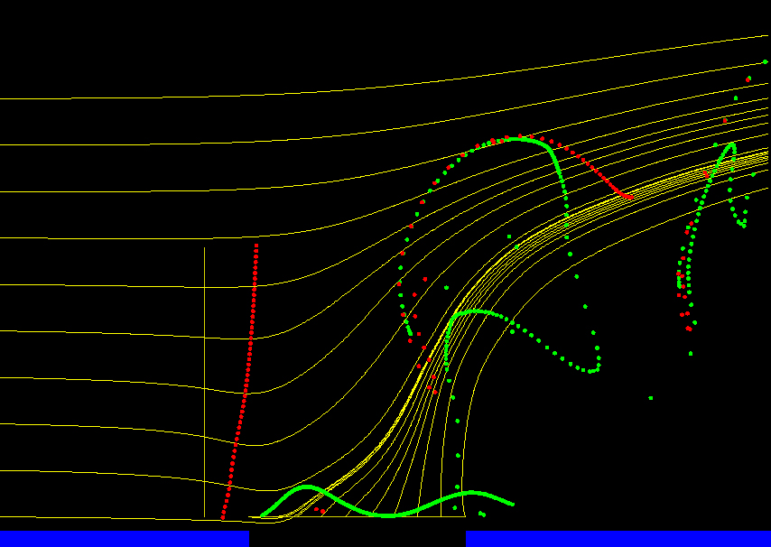

|
Langley Research CenterTurbulence Modeling Resource |
Exp: CFDVAL2004 Case 2: Synthetic Jet in Crossflow
Return to: CFDVAL2004 - Intro Page
Return to: Data from Experiments - Intro Page Return to: Turbulence Modeling Resource Home Page
 In Case 2, a zero-mass-flux, or synthetic, jet issues from a
circular orifice and interacts with the turbulent boundary layer
that has developed on a splitter plate mounted in an atmospheric
wind tunnel. The flow is conceptually similar to that
documented in Schaeffler (2003). The orifice has a diameter of
0.250 inches (6.35 mm). Being a synthetic jet, the flow
through the orifice and out into the outer flowfield alternates
between an exhaust and a suction cycle, driven by the
expansion and contraction of a cavity internal to the actuator. The volume changes in the internal cavity are accomplished by
replacing one of the rigid walls of the cavity, the wall
opposite the orifice exit, with a deformable wall. This flexible
wall is driven by a bottom-mounted moveable piston. The
piston is driven electro-mechanically.
The tunnel medium is air at sea level, and the tunnel is operating
such that the Mach number in the test section, over the
plate, is approximately M=0.1. The tunnel dimensions at the
test section are 15.0 inches (381.00 mm) wide by
approximately 9.8 inch (249 mm) high (distance from the splitter
plate to the top wall). The height of the top
wall is adjusted down the length of the test section to yield
a flow with an approximately zero streamwise pressure gradient.
The orifice is located under a fully developed turbulent
boundary layer, whose approximate thickness (delta) at the
orifice is somewhat greater than 20 mm.
All of the experimental data are phase
averaged with respect to the drive signal of the actuator. References:
Return to: CFDVAL2004 - Intro Page
Return to: Data from Experiments - Intro Page Return to: Turbulence Modeling Resource Home Page
Responsible NASA Official:
Ethan Vogel
Page Curator:
Clark Pederson
Last Updated: 11/04/2021